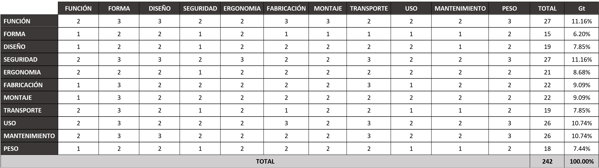
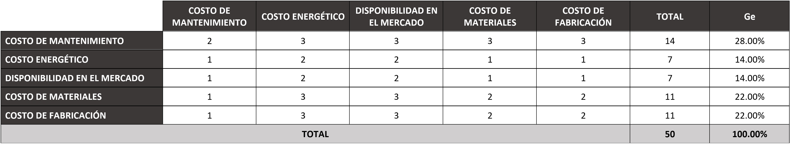

En el documento actual se detalla la actividad que se hizo en la semana 6. También se explicará sobre la metodología de diseño VDI 2225 y su uso en el proyecto desarrollado.
Aplicación del Design Thinking en el proyecto actual
En esta semana, se siguió realizando el tercer paso (Idear) del Design Thinking. Al haber definido tres conceptos de solución se eligió uno el cual es: “Realidad aumentada para la capacitación de cirujanos plásticos en la identificación de la vitalidad del tejido post quemado”. Se eligió este concepto de solución ya que se considera que este es el más apropiado para resolver el problema definido. Al tener claro cual es el concepto de solución a desarrollar se empezó a definir las características de su diseño. Para llevar a cabo de manera idónea este proceso se hizo uso de una metodología de diseño llamada “VDI 2225” el cual consiste en un método de decisión optimizado al mínimo coste.
¿Qué son las metodologías de diseño?
Las metodologías de diseño son una secuencia concreta de acciones para el diseño de sistemas técnicos que derivan su conocimiento de la ciencia del diseño, de la psicología cognitiva y de la experiencia práctica en diferentes campos (1).
Dentro de todas las metodologías de diseño están los modelos de fase los cuales tienen la función estructurar el proceso de diseño en fases o etapas y la secuencia recomendada para llevarla a cabo (2).
El VDI 2225 es un modelo de fase que optimiza el coste utilizado en el diseño. Este modelo de fase plantea los siguientes pasos para el diseño del producto (3):
- Tabla de requerimientos: En la tabla de requerimientos se enumeran las características que debe tener el producto. Estas se dividen entre exigencias y deseos. Las exigencias son cualidades que debe tener obligatoriamente el producto final. Los deseos son propiedades que pueden o no estar en el producto final.
- Entradas y Salidas: En este paso de la metodología se definen las entradas y salidas del sistema del producto. Las entradas son los elementos que el sistema (caja negra) puede disponer para su funcionamiento. Las salidas son los objetivos resueltos del sistema, es decir lo que busca realizar con su funcionamiento.
- Esquema de funciones (No aplica en este proyecto): En el esquema de funciones se explica el funcionamiento del sistema, es decir se explican los procesos que se llevan a cabo para convertir las entradas en salidas.
- Matriz morfológica (No aplica en este proyecto): En la matriz morfológica se enumeran los distintos componentes que pueden cumplir las funciones mencionadas en el esquema de funciones. Luego de ello se elaboran conceptos de solución los cuales consisten en la unión de los componentes según la secuencia de las funciones del sistema.
- Evaluación de conceptos de solución: En este paso se evalúan los conceptos de solución hechos en la matriz morfológica según criterios técnicos y económicos. A cada concepto de solución se le da una puntuación del 0 al 5 en cada criterio técnico y económico según en qué grado satisface el criterio planteado. El concepto de solución que obtiene más puntaje al final de la evaluación es el idóneo a realizar.
- Proyectos preliminares: En esta etapa se debe configurar todas las piezas, así como fijar su disposición entre ellas. Para poder proyectar adecuadamente se debe seguir las siguientes reglas básicas:
- Claridad: Uso adecuado de los conocimientos de la física y la tecnología relacionada con el dispositivo.
- Simpleza: Economía en la fabricación y en el uso. Ejemplo: Fabricación simple, poco peso, bajos costos de mantenimiento y funcionamiento.
- Seguridad: Seguridad para las personas, máquinas y medio ambiente.
- Matrices de evaluación: Al tener diferentes proyectos preliminares se realizan matrices de evaluación técnica y económica. En cada matriz, a cada criterio técnico o económico se le da un valor de importancia (Gt y Ge) calculado a través de una comparación de importancia entre cada criterio. Las tablas siguientes muestran esa comparación y los valores Gt y Ge calculados. A cada proyecto preliminar se le da un valor (p) del 1 al 5 según como este satisface el criterio planteado. Se realiza una suma de los valores multiplicados (G*p) y se divide entre el valor que tendría un proyecto ideal. Si el valor obtenido es mayor a 0.7 es un proyecto para considerar, sino el proyecto evaluado es deficiente y queda descartado.


- Proyecto Optimo: Se realiza una gráfica de valor económico(yi) versus valor técnico (xi) en el cual se pone los valores obtenidos en las matrices de evaluación. Los valores que se acerquen más a la gráfica lineal del proyecto ideal son los óptimos, mientras que los que se alejen más son los deficientes. Con ello se puede encontrar el proyecto optimo ya que el que se acerque más a la gráfica lineal satisface tanto los criterios técnicos como económicos.
Referencias:
(1) Pahl, G., Beitz, W., Feldhusen, J., & Grote, K. Engineering design: a systematic approach, 3rd ed. London: Springer,2007
(2) E. B. Romero, “Metodología para el diseño de máquinas adaptadas a comunidades en desarrollo,” 2015.
(3) “Diseño de dispositivos biomédicos utilizando la metodología de diseño VDI 2225”, class notes for 1CAY41, Departamento de Ingeniería Biomédica, Universidad Cayetano Heredia, primavera 2019.
REGRESAR